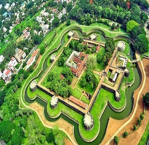

Palakkad Fort is an old fort situated in the heart of Palakkad town of Kerala state, southern India. It was recaptured and rebuilt grandly by Sultan Hyder Ali in 1766 ACE and remains one of the best preserved forts in Kerala.
Read moreMalampuzha Dam is the largest reservoir in Kerala, located near Palakkad, in the state of Kerala in South India, built post independence by the then Madras state.
Read moreSilent Valley National Park, is a national park in Kerala, India. It is located in the Nilgiri hills, has a core area of 89.52 km², which is surrounded by a buffer zone of 148 km². This national park has some rare species of flora and fauna. This area was explored in 1847 by the botanist Robert Wight.
Read more